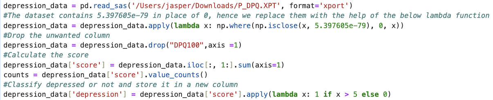

NHANES is designed to assess the health and nutritional status of adults and children in the United States. The survey is unique in that it combines interviews, physical examinations, and administers tests of physical activity and fitness that include children and adolescents. The main goal of this analysis is to
- Find relationships between different factors (from unrelated departments) in the dataset
- Use bokeh package for interactive visualizations
This analysis comprises of:
- Dataset collection
- Merging datasets
- Data wrangling
- Building plots
- Depression amongst people with various income
- Mean cholesterol level of each age group
- Health conditions amongst individuals vs their shift timings
- Linked plot for comparing mean systole and diastole pressure among various age groups
- Table to view health report with additional filters
Dataset Collection and pre-processing
NHANNES dataset is free for use and can be downloaded from here (dataset).
For this analysis, the specific data considered are:
- Demographics data
- Blood Pressure data
- Cholesterol, diabetes data
- Income data
- Mental health data
- Occupation data
Data pre-processing:
The dataset contains 5.397605e-79 in place of 0, hence we replace them with the help of the below lambda function
To handle the missing values in columns like Cholesterol value, Systolic reading and diastolic reading, the medians of the corresponding columns have been used.
The depression data is just a question and answer response in form of scores. So, for this analysis, patient with a cummulative score of 5 or more are considered to be depressed.
Interactive plots using Bokeh
Depression amongst people with various income:
The below plot is to find if there is any relationship to a person's mental health with his income. For this, the columns taken are "INDFMMPC" which gives the index of poverty to the family and the "depression" column computed in pre-processing step.
The plot is made in such a way that when we hover over each bar, a tooltip is viewd with the informations such as the INDFMMPC category, the number of people in this categore, the number of depressed people in this category and the ratio between them. The line plot is added to view the trend properly.
From the above plot, we could observe that, as the income gets higher, the ratio of depressed people is decreasing. (Labels 7 are missing data and 9 are people who didn't disclose the data). Hence, we can infer that a person's income is one of the key factors to maintain his mental health.
Impact of working hours on health conditions:
In the next plot, we will be making plots to see if working hours has an impact on health conditions such as Cholesterol, hyper-tension, diabetes, Asthma, heart attack, liver conditions and thyroid. We will be doing this with the help of linked plots from the bokeh package.
Selct a bar in the bar chart and view the corresponding distribution of work hours in the adjacent pie-graph.
The above plot is helpful in viewing the number of people working in varying shifts who suffer from a particular health condition. We can observe that, most of the health conditions are found in people working either the regular shift or varying shift. This might be due to the fact that the people working in those shifts are more. But if we take out the ratio, we might be able to make other inferences as well.
Table to view health report with additional filters
We will create a new table with various functionalities such as sorting based on a column, selecting from drop down, checkboxes, slider for ranges to get a comprehensive look on how the records are present.
From the above table, various filters can be applied and the dataset can be filtered out to find various subsets of data for further analysis.
Systole and Diastole readings against the age:
In the next plot, we will be plotting the Systole and Diastole readings against the age to view the pattern. This is also done by linking 2 plots. As the range in 1 plot is changed by zooming in or moving sideways, the next plot will also show the corresponding co-ordinates.
INSTRUCTIONS:
From the above graph we can infer that the systolic blood pressure increases gradually with age within a range of 110 till 150. This clears the notion that 120 is the ideal systolic pressure. The mean diastolic pressure increases till late 50s and starts to decrease gradually. The range is between 67 - 80
Mean cholesterol value amongst different age groups:
In this plot, we will make a normal line plot more visually pleasing by adding some custom effects to view the mean cholesterol level of different age group.
As you hover through the plot, a tooltip box showing the age group with closer mean values if popped up.
From the above plot we can draw some inferences such as,
- As age increases cholesterol level also increases gradually till a particular age (till 60s)
- The cholesterol gradually decreases after this age.
- Aged people should be careful about their diet in terms of cholesterol for health reasons
This plot can be useful in comparing an individual cholesterol level with the mean cholesterol level of his/her age group.
CONCLUSION:
Throughout this task, we have drawn various conclusions based on the plots which we have plotted by combining a variety of datasets. The bokeh package has been extensively used to make interactive plots, linked plots and table. Effective visualization techniques have been used to bring out conclusions and inferences between various variables from the NHANES dataset.
As future work a comprehensive dashboard can be built to view various plots. There are a lot of data collected. Task related research can be done.